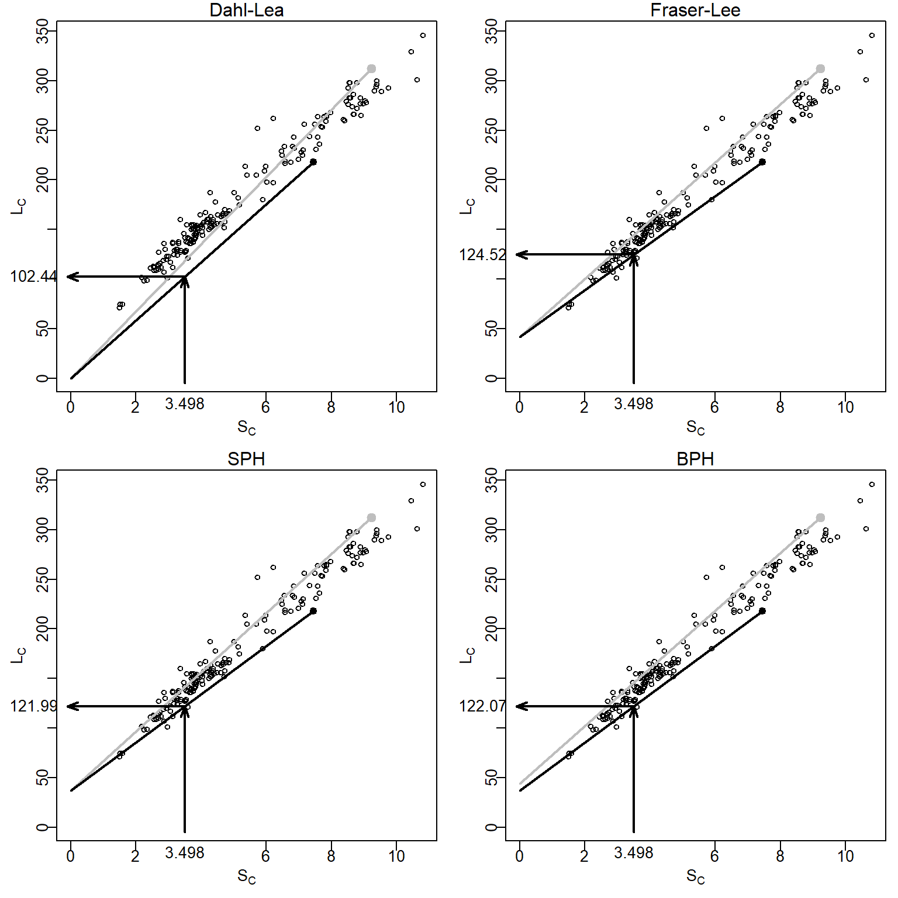

library(FSA) # for peek(), headtail(), sumtable()
library(dplyr) # for filter(), select(), mutate(), arrange(), group_by(), summarize()Backcalculation of Previous Lengths
Note
The RFishBC package has functions to acquire growth increment data from images of ageing structures and to ease back-calculation computations. Please see the vignettes for RFishBC for a more thorough description of back-calculating previous lengths.
Francis (1990) defined back-calculation as “… a technique that uses a set of measurements made on a fish at one time to infer its length at an earlier time or times. Specifically, the dimensions of one or more marks in some hard part of the fish, together with its current body length, are used to estimate its length at the time of formation of each of the marks. … The marks are generally annual rings associated with growth checks, … .” Thus, backcalculation is the reconstruction of the length of a fish at previous ages from measurements made on calcified structures.
Setup
Packages
Functions used in this supplement require the following packages.
Also note that single functions from the tidyr and stringr packages are used with :: so that the whole packages are not loaded here.
Data
All analyses in this supplement use the West Bearskin Lake (MN) Smallmouth Bass (Micropterus dolomieu) data from Weisberg (1993) found in SMBassWB.1 The analysis in this supplement will focus on those fish captured in 1990. Three variables that were constant and not used in this analysis and three measurement variables that corresponded to ages that did not exist after reducing to only fish captured in 1990 were removed to save space.
1 Download data with CSV link on the linked page.
SMBassWB <- read.csv("https://raw.githubusercontent.com/fishR-Core-Team/FSA/main/data-raw/SMBassWB.csv")wb90 <- SMBassWB |>
filter(yearcap==1990) |>
select(-(species:gear),-(anu10:anu12))
peek(wb90,n=5)#R| yearcap fish agecap lencap anu1 anu2 anu3 anu4 anu5 anu6
#R| 1 1990 482 1 75 1.51076 NA NA NA NA NA
#R| 45 1990 431 3 130 1.01867 2.04110 3.22882 NA NA NA
#R| 90 1990 453 3 165 1.63068 2.96180 3.96131 NA NA NA
#R| 136 1990 382 7 225 1.33285 2.42372 3.04270 3.79372 4.86226 5.74919
#R| 181 1990 389 9 329 1.05913 2.18769 3.55137 4.40766 5.78634 7.58178
#R| anu7 anu8 anu9 radcap
#R| 1 NA NA NA 1.51076
#R| 45 NA NA NA 3.22882
#R| 90 NA NA NA 3.96131
#R| 136 6.47536 NA NA 6.47536
#R| 181 8.32094 9.46362 10.43491 10.43491
Terminology
Two types of measurements can be made on calcified structures. A radial measurement is the total distance from the center of the structure (e.g., focus of scale or nucleus of otolith) to the edge of an annulus. An incremental measurement is the distance between two successive annuli. Radial measurements are required for back-calculation of fish length.
Back-calculation models estimate length at previous age \(i\) (i.e., \(L_{i}\)) from known values of length at time of capture (\(L_{C}\)), scale radius to the \(i\)th annulus (\(S_{i}\)), and scale radius at time of capture (\(S_{C}\)). Several back-calculation models rely on the relationship between \(S_{C}\) and \(L_{C}\). Depending on the model, a function of mean \(S_{C}\) for a given \(L_{C}\) (i.e., \(E(S_{C}|L_{C})\) ) or mean \(L_{C}\) for a given \(S_{C}\) (i.e., \(E(L_{C}|S_{C})\)) is used. These functions are not required to be linear, but often are, and in their linear form are represented as
\[ E(S_{C}|L_{C})=a+bL_{C} \tag{1}\]
\[ E(L_{C}|S_{C})=c+dS_{C} \tag{2}\]
Fitting these regressions is demonstrated below.
Common Back-Calculation Models
The first back-calculation model was jointly developed by Knut Dahl and Einar Lea and appeared in Lea (1910). The underlying concept of the Dahl-Lea model is that growth of the calcified structure is in exact proportion to growth in length of the fish. With this, the ratio of \(S_{i}\) to \(S_{C}\) is the same as the ratio of \(L_{i}\) to \(L_{C}\). Rearrangement of this equality yields the Dahl-Lea back-calculation model
\[ L_{i}=\frac{S_{i}}{S_{C}}L_{C} \tag{3}\]
The Dahl-Lea model describes a family of straight lines that pass through the origin and each observed (\(S_{C},L_{C}\)) point. Visually (Figure 1), the estimated \(L_{i}\) for a particular fish is found by locating \(S_{i}\) along the x-axis, moving vertically until the straight line for that fish is met, and then moving horizontally to the point on the y-axis.

Fraser (1916) was the first to describe, but Lee (1920) was the first to formally derive, the back-calculation model from the concept that “the growth increment of the scale is, on the average …, a constant proportion of the growth increment of the fish” (Francis 1990). In practice, the Fraser-Lee model modified the Dahl-Lea model by adjusting for the length of the fish when the calcified structure forms (i.e., \(L=c\) when \(S=0\)), that is,
\[ L_{i}=\frac{S_{i}}{S_{C}}(L_{C}-c)+c \tag{4}\]
where \(c\) comes from the length of the fish at the time of scale formation, the intercept of the length-scale relationship regression (e.g., from Equation 2), or from published “standards” for a species (Carlander 1982). The Fraser-Lee model describes a family of lines with an intercept of \(c\) that pass through the (\(S_{C},L_{C}\)) point (Francis (1990); Figure 1).
The scale proportional hypothesis (SPH) model was named by Francis (1990), but was first recognized by Whitney and Carlander (1956) when they said “{i}f the scale was 10 per cent larger when the fish was caught than the average scale for that size of fish, [then] the scale would be 10 per cent larger than normal throughout the life.” If “average” and “normal” are considered to be expected values, then this hypothesis can be written as
\[ \frac{S_{i}}{E[S|L_{i}]}=\frac{S_{C}}{E[S|L_{C}]} \]
If it is assumed that the scale-length relationship is linear, then the two expected values in these ratios are computed by plugging \(L_{i}\) and \(L_{C}\), respectively, into the scale-length relationship (i.e., Equation 1) to produce
\[ \frac{S_{i}}{a+bL_{i}}=\frac{S_{C}}{a+bL_{C}} \]
which can be solved for \(L_{i}\) to yield the general SPH back-calculation model
\[ L_{i} = \frac{S_{i}}{S_{C}}\left(L_{C}+\frac{a}{b}\right) - \frac{a}{b} \tag{5}\]
The linear SPH model produces a family of lines that all have an intercept of \(-\frac{a}{b}\) and pass through each observed (\(S_{C},L_{C}\)) point (Figure 1). The SPH model is the same as the Fraser-Lee model except that the intercept from Equation 2 is replaced with \(-\frac{a}{b}\). Further note that the SPH model is the same as the Dahl-Lea model if \(a=0\).
The body proportional hypothesis (BPH) model was also named by Francis (1990) and was also first recognized by Whitney and Carlander (1956) when they said “{i}f a fish at time of capture were 10 per cent smaller than the average fish with that size of scale, [then] the fish would be 10 per cent smaller than the expected length for the size of that scale throughout life.” This hypothesis can be written as
\[ \frac{L_{i}}{E[L|S_{i}]}=\frac{L_{C}}{E[L|S_{C}]} \]
If the length-scale relationship is linear then the expected values can be found by plugging \(S_{i}\) and \(S_{c}\) into Equation 2 to get
\[ \frac{L_{i}}{c+dS_{i}}=\frac{L_{C}}{c+dS_{C}} \]
which can be solved for \(L_{i}\) to yield the general BPH back-calculation model
\[ L_{i}=L_{C}\frac{c+dS_{i}}{c+dS_{c}} \tag{6}\]
The linear BPH model produces a family of lines that have an intercept of \(\frac{cL_{C}}{c+dS_{C}}\) and pass through each observed (\(S_{C},L_{C}\)) point (Figure 1). In contrast to the other back-calculation models, the BPH model uses lines with a different intercept for each fish. The linear BPH model is the same as the Dahl-Lea model if \(c=0\).
Vigliola and Meekan (2009) described 18 other models for the back-calculation of fish length.2
2 Functions for each of these models can be created with bcFuns() from RFishBC.
Data Organization & Manipulation
In wide or one-fish-per-line format, all information about a single fish, including all of the measurements from the calcified structure, is in one row of the data frame. wb90 contains radial measurements in the wide format.3
3 See the data frame snippet above.
For back-calculation of fish length, these data must be radial, and not incremental, measurements. If wb90 had contained incremental measurements, then it could be converted to radial measurements with gConvert() from RFishBC. The gConvert() function requires the data frame with the incremental measurements as the first argument, the prefix (in quotes) for the columns that contain the incremental measurements in in.pre=, and the type of measurement to convert to in out.type= (the options are "rad" (the default) or "inc"). For example, the code below would create a new data frame from wb90 with radial measurements (IF wb90 had incremental measurements).
# NOT RUN because wb90 is already radial measurements
wb90A <- RFishBC::gConvert(wb90,in.pre="anu",out.type="rad")For efficient back-calculation, the data must also be converted to long or one-measurement-per-line format. Wide data may be converted to long data with pivot_longer() from tidyr.4 For this use, the variables that contain the radial measurement data are given to cols=. The names for these variables will form a new column in the resulting data frame with the name given in names_to=. The values for these variables will be in a new column with the name given in values_to=.
4 Ogle (2016) used gather() from tidyr for this same purpose. The maintainers of tidyr suggest using pivot_longer() rather than gather.
wb90r <- wb90 |>
tidyr::pivot_longer(cols=anu1:anu9,names_to="agei",values_to="radi") |>
arrange(fish,agei)
headtail(wb90r)#R| yearcap fish agecap lencap radcap agei radi
#R| 1 1990 374 7 243 7.57375 anu1 1.01672
#R| 2 1990 374 7 243 7.57375 anu2 2.39296
#R| 3 1990 374 7 243 7.57375 anu3 3.47635
#R| 1627 1990 998 7 298 8.54805 anu7 8.54805
#R| 1628 1990 998 7 298 8.54805 anu8 NA
#R| 1629 1990 998 7 298 8.54805 anu9 NAAs noted in Ogle (2016), there are three potential problems with this result. First, the new agei variable contains the names of the variables from the original wide format data frame (e.g., anu1, anu2) rather than numbers that correspond to the age that the annulus was formed. Converting these labels to numbers begins by finding the portion of the string after the “anu” prefix with str_sub() with the vector of names as the first argument and start=4 (because “anu” is three characters long). The result from str_sub(), however, is a character that must then be converted to a numeric with as.numeric().
The second problem is that several of the radial measurements contain NA values. The non-NA values are found and retained by using !is.na() within filter().
The third problem, while not an issue with these particular data, is that “plus growth” may have been recorded. “Plus growth” is growth on the margin of the calcified structure that does not represent a complete year of growth. If “plus growth” is present, then the new agei variable will have a value greater than the age-at-capture value. These instances should be removed from the new long format data frame.
The following code adjusts for these three issues.
wb90r <- wb90r |>
mutate(agei=as.numeric(stringr::str_sub(agei,start=4))) |>
filter(!is.na(radi)) |>
filter(agei<=agecap)
peek(wb90r,n=10)#R| yearcap fish agecap lencap radcap agei radi
#R| 1 1990 374 7 243 7.57375 1 1.01672
#R| 85 1990 388 9 300 9.38096 8 8.08080
#R| 170 1990 408 3 136 3.12974 3 3.12974
#R| 256 1990 436 3 154 4.27702 1 1.46016
#R| 341 1990 460 2 115 2.66954 2 2.66954
#R| 426 1990 698 7 264 7.76545 3 3.62943
#R| 511 1990 714 7 290 9.31498 2 2.89488
#R| 597 1990 730 2 98 2.24291 1 1.21677
#R| 682 1990 747 7 265 7.84295 7 7.84295
#R| 767 1990 998 7 298 8.54805 7 8.54805
Computing Back-Calculated Lengths
Scale-Length Relationships
The scale-length (Equation 1) and length-scale (Equation 2) relationships required for all but the Dahl-Lea method are computed with the wide format data. Thus, the wide format data frame must contain the length of the fish (e.g., lencap) and the total radius of the calcified structure (e.g., radcap) at the time of capture. Both linear relationships are fit with lm() and the coefficients should be extracted with coef() and saved into objects.
lm.sl <- lm(radcap~lencap,data=wb90)
( a <- coef(lm.sl)[[1]] )#R| [1] -1.304391( b <- coef(lm.sl)[[2]] )#R| [1] 0.03537477lm.ls <- lm(lencap~radcap,data=wb90)
( c <- coef(lm.ls)[[1]] )#R| [1] 41.65166( d <- coef(lm.ls)[[2]] )#R| [1] 27.35597Applying the Back-Calculation Models
The \(L_{i}\) estimated with a back-calculation model are most easily added to the long format data frame with mutate(). For example, the \(L_{i}\) computed with all four back-calculation models are added to wb90r below.
wb90r <- wb90r |>
mutate(DL.len=(radi/radcap)*lencap,
FL.len=(radi/radcap)*(lencap-c)+c,
SPH.len=(-a/b)+(lencap+a/b)*(radi/radcap),
BPH.len=lencap*(c+d*radi)/(c+d*radcap))
headtail(wb90r,n=5)#R| yearcap fish agecap lencap radcap agei radi DL.len FL.len
#R| 1 1990 374 7 243 7.57375 1 1.01672 32.62096 68.68119
#R| 2 1990 374 7 243 7.57375 2 2.39296 76.77693 105.26856
#R| 3 1990 374 7 243 7.57375 3 3.47635 111.53696 134.07052
#R| 4 1990 374 7 243 7.57375 4 4.37718 140.43964 158.01910
#R| 5 1990 374 7 243 7.57375 5 5.18976 166.51087 179.62156
#R| 763 1990 998 7 298 8.54805 3 3.60701 125.74669 149.82265
#R| 764 1990 998 7 298 8.54805 4 4.48222 156.25804 176.06941
#R| 765 1990 998 7 298 8.54805 5 5.17646 180.46047 196.88905
#R| 766 1990 998 7 298 8.54805 6 6.62240 230.86847 240.25149
#R| 767 1990 998 7 298 8.54805 7 8.54805 298.00000 298.00000
#R| SPH.len BPH.len
#R| 1 64.54444 67.83504
#R| 2 102.00007 104.60001
#R| 3 131.48552 133.54177
#R| 4 156.00243 157.60660
#R| 5 178.11753 179.31392
#R| 763 147.06071 151.78969
#R| 764 173.79670 177.68803
#R| 765 195.00440 198.23129
#R| 766 239.17509 241.01809
#R| 767 298.00000 298.00000For example, the mean length-at-age may be computed from the back-calculated lengths (shown below for the Fraser-Lee results).
wb90r |>
group_by(agei) |>
summarize(n=validn(FL.len),mn=mean(FL.len),sd=sd(FL.len)) |>
as.data.frame()#R| agei n mn sd
#R| 1 1 181 78.5663 6.472692
#R| 2 2 178 114.1527 10.453632
#R| 3 3 155 146.7669 13.898434
#R| 4 4 71 172.6512 15.339848
#R| 5 5 64 201.0405 17.479717
#R| 6 6 64 235.3834 23.350527
#R| 7 7 50 268.5969 25.286958
#R| 8 8 2 283.2237 26.912010
#R| 9 9 2 314.5000 20.506097Additionally, the mean length at each back-calculated age computed separately for each age-at-capture may be computed with sumTable() from FSA, where the left side of the formula is the quantitative variable to be summarized and the right side has grouping variables presented in row*column format.
sumTable(FL.len~agecap*agei,data=wb90r,digits=1)#R| 1 2 3 4 5 6 7 8 9
#R| 1 73.7 NA NA NA NA NA NA NA NA
#R| 2 79.7 113.3 NA NA NA NA NA NA NA
#R| 3 77.3 112.8 148.9 NA NA NA NA NA NA
#R| 4 71.3 121.8 160.9 194.0 NA NA NA NA NA
#R| 6 79.8 107.9 136.0 169.6 198.8 229.7 NA NA NA
#R| 7 81.6 118.2 144.7 170.7 201.8 237.0 269.1 NA NA
#R| 9 71.2 99.8 135.0 166.1 197.5 236.0 256.4 283.2 314.5References
Carlander, K. D. 1982. Standard intercepts for calculating lengths from scale measurements for some centrarchid and percid fishes. Transactions of the American Fisheries Society 111:332–336.
Francis, R. I. C. C. 1990. Back-calculation of fish length: A critical review. Journal of Fish Biology 36:883–902.
Fraser, C. McL. 1916. Growth of the spring salmon. Transactions of the Pacific Fisheries Society 1915:29–39.
Lea, E. 1910. On the methods used in the Herring-investigations. Publ. Circonst. Cons. perm. int. Explor. Mer 108(1):14–22.
Lee, R. M. 1920. A review of the methods of age and growth determination in fishes by means of scales. Fisheries Investigations, London Series 2 4((2)):1–32.
Ogle, D. H. 2016. Introductory Fisheries Analyses with R. CRC Press, Boca Raton, FL.
Vigliola, L., and M. G. Meekan. 2009. The back-calculation of fish growth from otoliths. Pages 174–211 in B. S. Green, B. D. Mapstone, G. Carlos, and G. A. Begg, editors. Tropical Fish Otoliths: Information for Assessment, Management, and Ecology. Springer.
Weisberg, S. 1993. Using hard-part increment data to estimate age and environmental effects. Canadian Journal of Fisheries and Aquatic Sciences 50(6):1229–1237.
Whitney, R. R., and K. D. Carlander. 1956. Interpretation of body-scale regression for computing body length of fish. Journal of Wildlife Management 20:21–27.